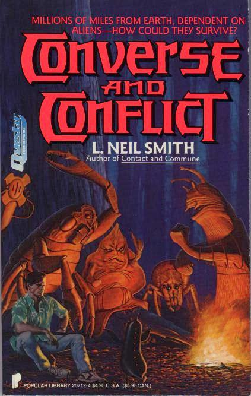

Converse and Conflict
by L. Neil Smith
The American Soviet
Socialist Republic claims the asteroid 5023 Eris, but somebody (or
something) is already there! The Elders are from Earth ... sort
of. They aren't human, but they are capitalists!
(So politically
incorrect that Warner Books unilaterally cancelled the third volume!)
New York: Popular Library, An Imprint of Warner Books, Inc., 1990
199 pages, mass-market paperback
Library of Congress Catalog Card Number: [not given]
ISBN 0-445-20712-4
First Printing: June, 1990
Cover illustration by Wayne Barlowe